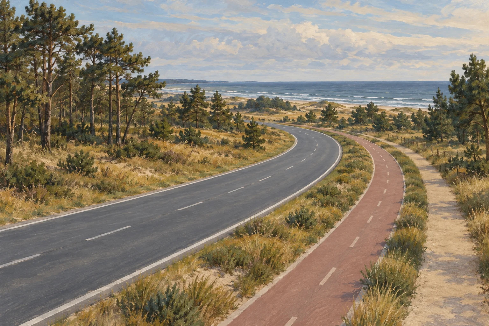

Новости на Балтике · Белая Дюна
Дорогу к «Белой Дюне» построят в два этапа: тендер на 2,9 млрд объявлен
Объявлен конкурс на строительство дороги к будущему курорту «Белая Дюна» у Поваровки. Начальная цена — 2 919 674 538 рублей. В закупке предусмотрены два этапа: подъезд к курорту и улица внутри его территории. Итоги конкурса планируют подвести 29 октября 2026 года.

Факты закупки
| Параметр | В карточке конкурса | Источник |
|---|---|---|
| Номер закупки | 0335200014926003779 | ЕИС |
| Начальная цена | 2 919 674 538 ₽ | Карточка закупки |
| Извещение опубликовано | 7 октября 2026 года | Карточка закупки |
| Заказчик | ГКУ КО «Управление дорожного хозяйства Калининградской области» | Карточка закупки |
| Заявки принимают до | 26 октября, 11:00 по московскому времени | Карточка закупки |
| Подведение итогов | 29 октября 2026 года — по графику конкурса | Карточка закупки |
| Срок исполнения контракта | С заключения контракта до 28 декабря 2027 года | Карточка закупки |
Что построят
Первый этап — подъезд к курорту
Дорога от трассы Зеленоградск — Приморск через Светлогорск в районе Путилово до «Белой Дюны»: около 4,5 км, две полосы. Вдоль предусмотрены тротуар и велодорожка, отделённые от проезжей части газоном.
Второй этап — улица внутри курорта
Магистральная улица районного значения протяжённостью 2,6 км пересечёт территорию курорта. Запланированы четыре полосы, тротуар и велодорожка. Вместе два участка составляют около 7,1 км.
Хронология
| Дата | Событие | Источник |
|---|---|---|
| 7 октября 2026 | Опубликовано извещение о конкурсе | Карточка закупки |
| 26 октября 2026 | Завершение приёма заявок по графику | Карточка закупки |
| 29 октября 2026 | Плановое подведение итогов | Карточка закупки |
| 28 декабря 2027 | Предельный срок исполнения контракта | Карточка закупки |
Контекст
«Белая Дюна» — проект нового курорта на побережье Балтийского моря у Поваровки. Дорожная закупка относится к его транспортной инфраструктуре. Параметры курорта, расположение и опубликованные документы собраны в нашем путеводителе по проекту.
Что это значит
Для туриста
В проекте есть отдельные пути для пеших прогулок и велосипеда. Пока они запланированы именно вдоль этих участков: непрерывный веломаршрут из Зеленоградска закупка сама по себе не подтверждает. До поездки важен следующий этап — открытие дороги для движения.
Для покупателя недвижимости
Конкурс — конкретный шаг подготовки территории. После него стоит смотреть на заключение контракта и фактическое выполнение работ. Срок дорожного контракта не обозначает открытие гостиниц, начало продаж или сдачу отдельных объектов.
Для местного бизнеса
В конце октября должен появиться результат конкурса. Он позволит узнать подрядчика и условия заключённого контракта. Сейчас победитель ещё не определён.
Для жителей Поваровки и Путилово
Подъезд свяжет территорию будущего курорта с существующей трассой. При выполнении проекта вдоль него появятся тротуар и велодорожка. Организацию движения на время работ предстоит уточнять по сообщениям заказчика и подрядчика.
Связи с регионом
Источники
- ЕИС: закупка №0335200014926003779Опубликовано 7 октября 2026 · сверено 8 октября 2026
- Контур.Закупки: карточка конкурса и срокиОпубликовано 7 октября 2026 · сверено 8 октября 2026
- РБК Калининград: параметры двух дорожных участковОпубликовано 8 октября 2026 · сверено 8 октября 2026